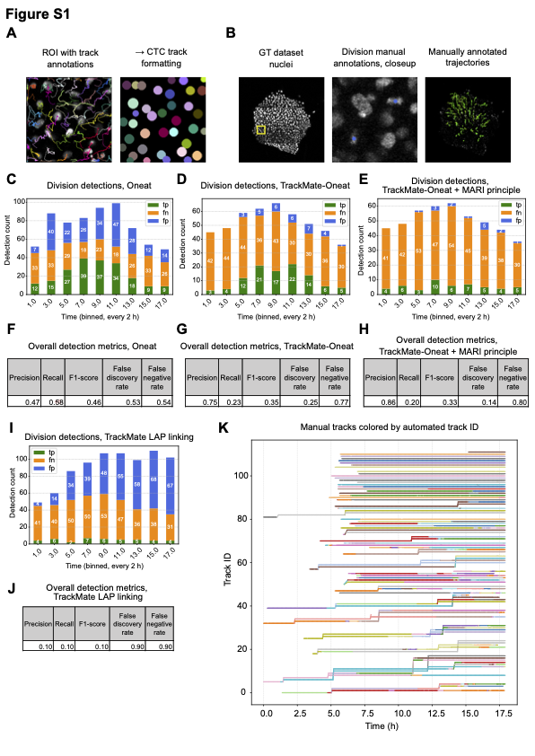

📘 CopenhagenWorkflow
A reproducible, modular, and Hydra-powered bioimage analysis pipeline for single-cell morphodynamics in Xenopus embryos.

🌐 Website#
Authors: Mari Tolonen, Ziwei Xu, Ozgur Beker, Varun Kapoor, Bianca Dumitrascu, Jakub Sedzinski
📖 Explore the Documentation
📁 GitHub Repository

🚀 Installation (Quickstart)#
conda create -n capedenv python=3.10
conda activate capedenv
conda install mamba -c conda-forge
pip install caped-ai ultralytics napari_fast4dreg
mamba install -c conda-forge cudatoolkit=11.2 cudnn=8.1.0
mamba install -c nvidia cuda-nvcc=11.3.58
pip install tensorflow-gpu==2.10.*
pip uninstall numpy && pip install numpy==1.26.4
This workflow uses Hydra to manage parameters, paths, and models in a clean, modular fashion.
📁 Configuration Structure
conf/
├── experiment_data_paths/
│ └── <dataset>.yaml
├── model_paths/
│ └── <model_config>.yaml
└── parameters/
└── <stage_config>.yaml
🔬 Pipeline Overview
Each step of the pipeline is a standalone script with its own configuration:
00_create_nuclei_membrane_splits.py– generateMerged.tifand split channels01_nuclei_segmentation.py– StarDist 3D nuclear segmentation01_enhance_membrane.py– CARE denoising for membrane channel01_vollcellpose_membrane_segmentation.py– Cellpose 2D membrane segmentation and 3D reconstruction02_oneat_nuclei.py– mitosis classification using Oneat03_nms_nuclei_automated.py– non-max suppression (automated)03_nms_nuclei_interactive.py– non-max suppression (interactive via Napari)
All parameters are controlled via YAML files in the conf/ directory.
🧩 Features#
📊 Tracking with TrackMate 7 + Oneat integration
🧠 DenseNet mitosis classification
🧬 Full 3D segmentation and lineage reconstruction
🪄 Napari plugins for manual inspection and correction
🧰 Evaluation via Jaccard, F1, and Cell Tracking Challenge metrics
🙌 Acknowledgments#
This project builds on the work of many excellent tools, including:
StarDist
CARE (CSBDeep)
Cellpose
TrackMate
Hydra
Napari
🤝 Contributing#
We welcome issues, pull requests, and external extensions.
Feel free to fork and open a PR with improvements or new modules.
🔗 License#
MIT License